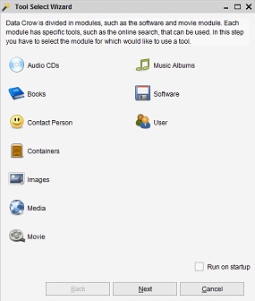
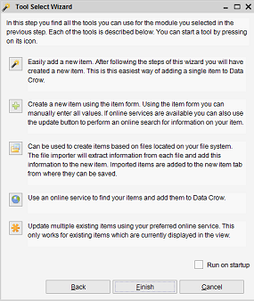

Tool Select Wizard
Menu path: Help > Tool Select Wizard
A wizard which will help you to select the right tool for the job.
Step 1
In the first step you select the module for which you want to use a tool.

Step 2
Presents you with the most commonly used tools for the selected module.
